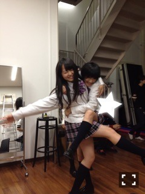
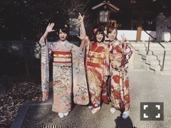

伊藤万理華
OFFICIAL BLOG
2016/01
08
Fri
伊藤万理華
3人。690回目
95年組、乃木神社で一足先に成人式！
成人になるメンバーを羨ましく思っていたら
自分もあっという間でした。
絵馬には
健康、自立、放出
と書きました。
私は早生まれのため、まだ19歳。
残り少ない十代を楽しもうと思います！

この一件統一感のない95年組
共通点は踊ることが大好きで、
頑固なところです。
今はだいぶ落ち着いたけど、
初期に休憩中おふざけが激しかったよん

16歳
若干20歳と20歳と20歳
まいまいの卒業、寂しいけど
14枚目までたくさん甘えよう。
まりか
コメント(561)
2016/01/08 15:30
« なんかいい。689回...
｜
TOP
｜
ハリセン帯。691回... »
PAGE TOP ▲